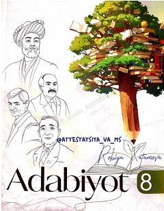

A88-sinf o'quvchilari uchun mo'ljallangan adabiyot fanidan o'quv qo'llanma.
Ushbu darslik 8-sinf o'quvchilari uchun mo'ljallangan bo'lib, badiiy adabiyot, ijodkor va davr munosabatlarini tahlil qilishga qaratilgan. Kitobda o'zbek va jahon adabiyoti namunalari, badiiy tasvir vositalari hamda adabiy tahlil usullari yoritilgan.